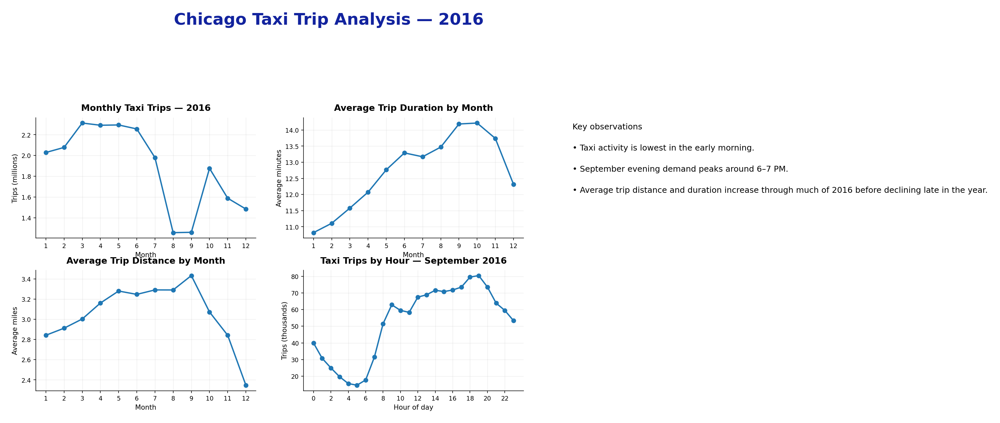
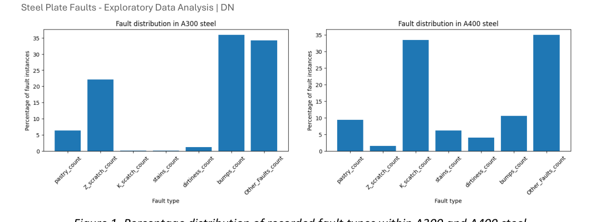

COMPLETEDSQL · BIGQUERY
Chicago Taxi Trip Analysis
SQL and Power BI analysis of Chicago taxi activity in 2016, examining trip volumes, distance, duration and hourly demand patterns.
SQLBigQueryPythonPower BI
> mechanical_engineer / data + ai / bangalore
I’m Dhanya, a mechanical engineer with 14+ years of experience across semiconductor equipment, automotive engineering and scientific research infrastructure. I naturally look for patterns, evidence and measurements when I’m trying to understand a problem, and I enjoy breaking complex systems into smaller, understandable parts. I’m now building on that approach through SQL, Python, analytics and machine learning.
01 / ABOUT
I’m a mechanical engineer, and I’ve always been interested in understanding how things work beyond the boundaries of one discipline. I’ve loved physics from a young age, and my interest in classical mechanics was one of the reasons I chose mechanical engineering.
My career has taken me through semiconductor equipment, automotive engineering and scientific research infrastructure. I tend to look for patterns first, then evidence, measurements and the physical reasons behind them. I like breaking complex systems into smaller, understandable parts, collecting information from different sources and building a clearer picture of what is actually happening. That way of thinking has helped me work through unfamiliar problems across very different technical environments.
Over the last few years, that curiosity has expanded into computing, data, machine learning and electronics. Robotics is also an area I want to pursue more seriously in the near future as I continue building the underlying skills.
I enjoy learning from first principles, asking a lot of questions, and turning what I learn into something practical — an analysis, a model, an app, a circuit or a working prototype.
I’m particularly interested in work that brings together engineering knowledge, data and real-world problem solving. Outside formal work, I’m building my own learning path across computing, mathematics, physics, electronics and creative work including art.
02 / PROJECTS
The projects I share here primarily focus on data analytics, machine learning and AI, alongside selected software and electronics work. Each project captures the problem, approach, tools and outputs as the work develops.

SQL and Power BI analysis of Chicago taxi activity in 2016, examining trip volumes, distance, duration and hourly demand patterns.

Exploratory analysis of 1,941 recorded steel plate fault instances, comparing fault patterns across steel grade and thickness and examining defect size and geometry. The analysis focuses on characterising the recorded faults without treating the dataset as evidence of true defect rates or causes.

A Kotlin + Jetpack Compose Android application for personalised Indian meal planning, nutrition targets, weekly plans and shopping lists.

Small Arduino and breadboard experiments used to learn circuits, inputs, outputs and embedded logic from first principles.
03 / SKILLS & TOOLS
A combination of engineering software, data tools and proven methodologies used across analysis, design, validation and delivery.
04 / LEARNING + BUILDING
01 machine learning + AI
02 statistics + mathematics for ML
03 SQL + data analysis
04 electronics + Arduino
05 Android development
05 / CONTACT